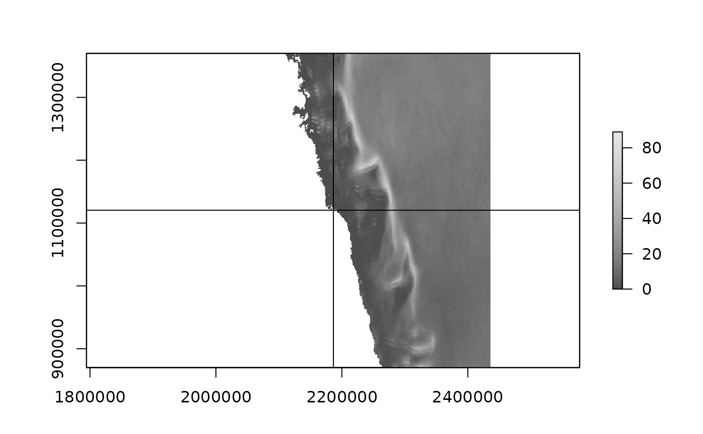

Average Lead-Frequency for the Arctic for winter months November-April 2002/03-2018/19 based on daily lead composites as derived from MOD/MYD-29 IST 5 min granules
read_leads_clim_south(xylim = NULL)
read_leads_clim_north(xylim = NULL)
read_leads_clim(hemisphere = c("south", "north"), xylim = NULL, ...)F. Reiser, S. Willmes, G. Heinemann (2020), A new algorithm for daily sea ice lead identification in the Arctic and Antarctic winter from thermal-infrared satellite imagery, Data subm.
read_leads_clim()
#> class : RasterLayer
#> dimensions : 8300, 7900, 65570000 (nrow, ncol, ncell)
#> resolution : 1000, 1000 (x, y)
#> extent : -3950000, 3950000, -3950000, 4350000 (xmin, xmax, ymin, ymax)
#> crs : +proj=stere +lat_0=-90 +lat_ts=-70 +lon_0=0 +x_0=0 +y_0=0 +a=6378273 +b=6356889.449 +units=m +no_defs
#> source : memory
#> names : LeadFrequency
#> values : 0, 127 (min, max)
#>
read_leads_clim_north(xylim = extent(c(-1, 1, -1, 1) * 50000))
#> class : RasterLayer
#> dimensions : 67, 76, 5092 (nrow, ncol, ncell)
#> resolution : 1316.667, 1509.091 (x, y)
#> extent : -50033.33, 50033.33, -50509.09, 50600 (xmin, xmax, ymin, ymax)
#> crs : +proj=stere +lat_0=-90 +lat_ts=-70 +lon_0=0 +x_0=0 +y_0=0 +a=6378273 +b=6356889.449 +units=m +no_defs
#> source : memory
#> names : LeadFrequency
#> values : 25, 43 (min, max)
#>
south <- read_leads_clim_south()
## hone in on Mawson
pt <- reproj::reproj_xy(cbind(62 + 52/60, -(67 + 36/60)), projection(south), source = "+proj=longlat")
lead <- read_leads_clim_south(xylim = extent(pt[1] + c(-1, 1) * 250000, pt[2] + c(-1, 1) * 250000))
plot(lead, col = grey.colors(100))
abline(v = pt[1], h = pt[2])
